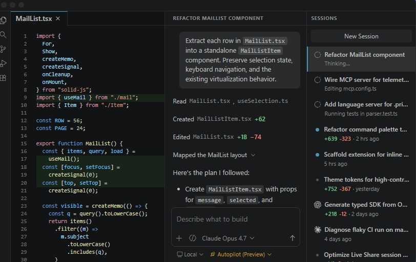

Visual Studio Code
Visual Studio CodeThe open source AI code editor
Your home for multi-agent development
Web, Insiders edition , or other platforms
By using VS Code, you agree to its license and privacy statement

Agents that build for you
Hand off tasks to AI agents that autonomously plan, make code changes, run commands, and iterate until the job is done.x
For example, assign a CLI-based agent to triage and fix bugs in the background, interact with another agent to implement a feature using live validation in the integrated browser, and delegate a homepage redesign to a cloud agent that opens a pull request for your team to review.
Get started with agentsAny agent, any model
Use the agent harness that fits your workflow. Run agents locally or in the cloud, with Copilot or third-party providers like Claude and OpenAI.
Choose from dozens of models across providers, from fast completion models to advanced reasoning models. Or bring your own key to use any model from any provider.
The same Copilot works across surfaces — VS Code, the Copilot CLI, GitHub.com, and mobile.
See how agents work across surfaces.All your sessions, one view
Stay productive while multiple agents work on tasks in parallel. Track all your agent sessions from a single view, regardless of where they run.
Quickly filter and monitor sessions, or dive into an individual agent interaction, without switching to a different tool or terminal.
Your rules, your agents
Ensure agents follow your practices and team workflows. Define custom instructions, add agent skills, or build custom agents tailored to your project.
Connect to external tools and services with MCP servers, or install agent plugins or extensions to expand the agent's capabilities.